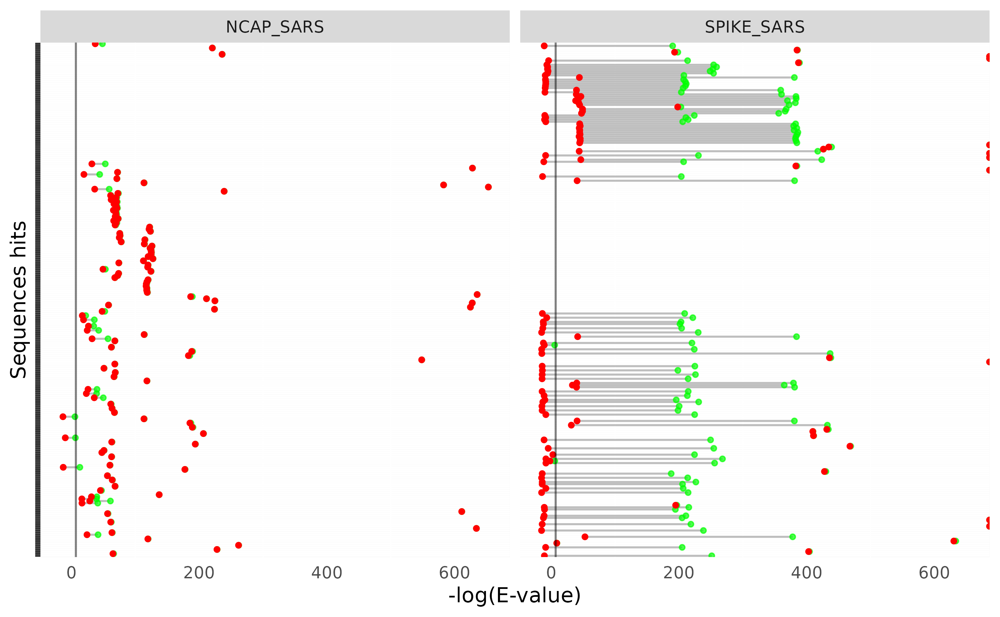
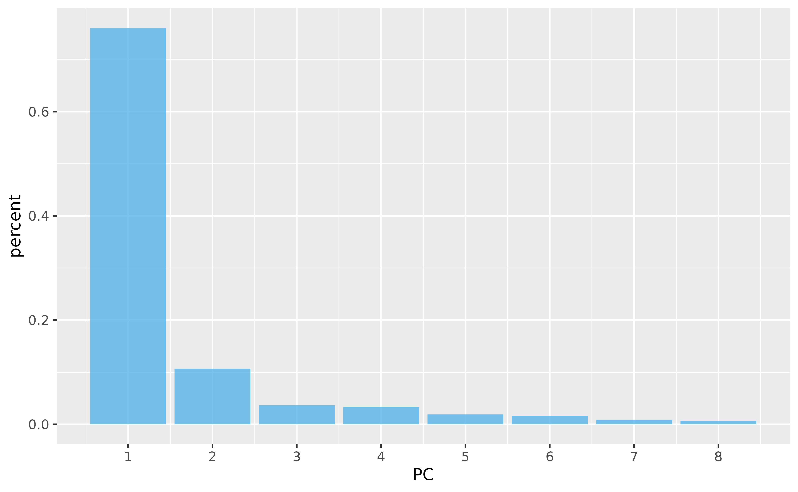
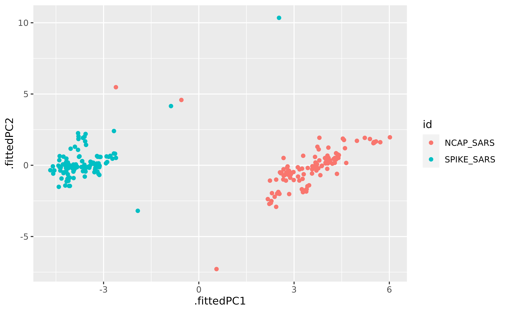
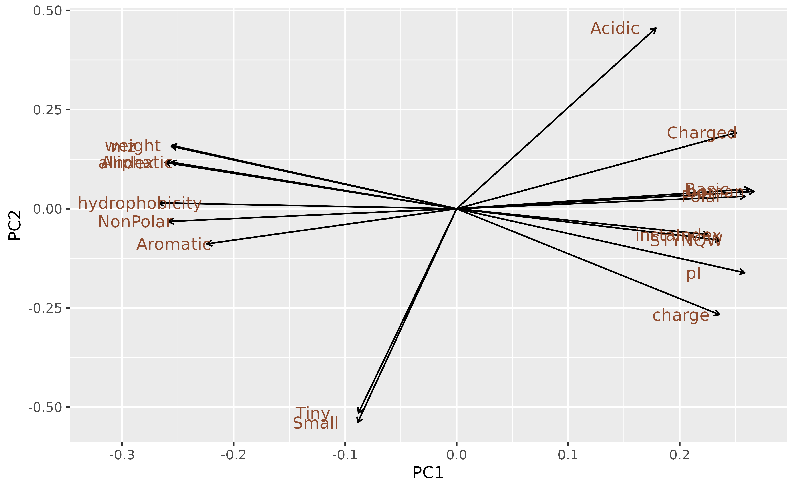

vignettes/HMMERutils.Rmd
HMMERutils.RmdHMMERutils
R is an open-source statistical environment which can be easily modified to enhance its functionality via packages. HMMERutils is a R package available via the Bioconductor repository for packages. R can be installed on any operating system from CRAN after which you can install HMMERutils by using the following commands in your R session:
if (!requireNamespace("BiocManager", quietly = TRUE)) {
install.packages("BiocManager")
}
BiocManager::install("HMMERutils")
## Check that you have a valid Bioconductor installation
BiocManager::valid()HMMERutils is based on many other packages and in particular in those that have implemented the infrastructure needed for dealing with protein sequences data . That is, packages like Biostrings.
As package developers, we try to explain clearly how to use our packages and in which order to use the functions. But R and Bioconductor have a steep learning curve so it is critical to learn where to ask for help. The blog post quoted above mentions some but we would like to highlight the Bioconductor support site as the main resource for getting help: remember to use the HMMERutils tag and check the older posts. Other alternatives are available such as creating GitHub issues and tweeting. However, please note that if you want to receive help you should adhere to the posting guidelines. It is particularly critical that you provide a small reproducible example and your session information so package developers can track down the source of the error.
HMMERutils
We hope that HMMERutils will be useful for your research. Please use the following information to cite the package and the overall approach. Thank you!
## Citation info
# citation("HMMERutils")HMMERutils
To follow this tutorial you will need to have the following libraries installed. Please feel free to run the following cell to install them if they are not yet installed.
if (!require(Biostrings)) install.packages('Biostrings')
if (!require(ggplot2)) install.packages('tidyverse')
if (!require(tidyverse)) install.packages('tidyverse')
if (!require(broom)) install.packages('broom')
library(HMMERutils)
library(Biostrings)
library(tidyverse)
library(ggplot2)
library(broom)The objective of this article is to show the main functionalities of the utilsHMMER library using a practical case. We will search for homologous sequences for the whole SARS-CoV-2 reference proteome.
First, let’s download the reference proteome for the Sars_CoV-2. To do this, we will read the compressed file directly from UniProt with the readAAStringSet function from the Biostrings library.
url <- paste0("https://ftp.uniprot.org/pub/databases/uniprot/current_release/",
"knowledgebase/reference_proteomes/Viruses/UP000000354/UP000000354_694009.fasta.gz")
sars.cov.fasta <- readAAStringSet(url)Let’s look at the headers of the different fasta sequences:
#>
#> Attaching package: 'kableExtra'
#> The following object is masked from 'package:dplyr':
#>
#> group_rows| names |
|---|
| sp|P0C6U8|R1A_SARS Replicase polyprotein 1a OS=Severe acute respiratory syndrome coronavirus OX=694009 GN=1a PE=1 SV=1 |
| sp|P0C6X7|R1AB_SARS Replicase polyprotein 1ab OS=Severe acute respiratory syndrome coronavirus OX=694009 GN=rep PE=1 SV=1 |
| sp|P59594|SPIKE_SARS Spike glycoprotein OS=Severe acute respiratory syndrome coronavirus OX=694009 GN=S PE=1 SV=1 |
| sp|P59595|NCAP_SARS Nucleoprotein OS=Severe acute respiratory syndrome coronavirus OX=694009 GN=N PE=1 SV=1 |
| sp|P59596|VME1_SARS Membrane protein OS=Severe acute respiratory syndrome coronavirus OX=694009 GN=M PE=1 SV=1 |
| sp|P59632|AP3A_SARS ORF3a protein OS=Severe acute respiratory syndrome coronavirus OX=694009 GN=3a PE=1 SV=1 |
| sp|P59633|NS3B_SARS ORF3b protein OS=Severe acute respiratory syndrome coronavirus OX=694009 GN=3b PE=1 SV=1 |
| sp|P59634|NS6_SARS ORF6 protein OS=Severe acute respiratory syndrome coronavirus OX=694009 GN=6 PE=1 SV=1 |
| sp|P59635|NS7A_SARS ORF7a protein OS=Severe acute respiratory syndrome coronavirus OX=694009 GN=7a PE=1 SV=1 |
| sp|P59636|ORF9B_SARS ORF9b protein OS=Severe acute respiratory syndrome coronavirus OX=694009 GN=9b PE=1 SV=1 |
| sp|P59637|VEMP_SARS Envelope small membrane protein OS=Severe acute respiratory syndrome coronavirus OX=694009 GN=E PE=1 SV=1 |
| sp|Q7TFA0|NS8A_SARS ORF8a protein OS=Severe acute respiratory syndrome coronavirus OX=694009 GN=8a PE=3 SV=1 |
| sp|Q7TFA1|NS7B_SARS Protein non-structural 7b OS=Severe acute respiratory syndrome coronavirus OX=694009 GN=7b PE=1 SV=1 |
| sp|Q7TLC7|Y14_SARS Uncharacterized protein 14 OS=Severe acute respiratory syndrome coronavirus OX=694009 GN=ORF14 PE=1 SV=1 |
| sp|Q80H93|NS8B_SARS ORF8b protein OS=Severe acute respiratory syndrome coronavirus OX=694009 GN=8b PE=1 SV=1 |
Right now the names identifying the sequences are too long and somewhat inconvenient to work with. We can solve this by applying:
names(sars.cov.fasta) <- names(sars.cov.fasta) %>%
parse_NCBI_FASTA_sequence_identifiers()| names | width |
|---|---|
| R1A_SARS | 4382 |
| R1AB_SARS | 7073 |
| SPIKE_SARS | 1255 |
| NCAP_SARS | 422 |
| VME1_SARS | 221 |
| AP3A_SARS | 274 |
| NS3B_SARS | 154 |
| NS6_SARS | 63 |
| NS7A_SARS | 122 |
| ORF9B_SARS | 98 |
| VEMP_SARS | 76 |
| NS8A_SARS | 39 |
| NS7B_SARS | 44 |
| Y14_SARS | 70 |
| NS8B_SARS | 84 |
We will search for homologous sequences for SPIKE_SARS and NCAP_SARS. First, we select both sequences using the $ operator.
SPIKE_SARS <- sars.cov.fasta$SPIKE_SARS
NCAP_SARS <- sars.cov.fasta$NCAP_SARSSince we want to perform the search with a single sequence (i.e. one search for each sequence of the reference proteome) we will use phmmer. Internally, HMMER builds a profile from your single query sequence.
By executing the next cell, we will be posting to the HMMER server a request with each sequence and database specified. Also, since we have selected fullseqfasta = TRUE we will download the fasta files with the complete sequences found. The timeout and verbose arguments refer to the maximum time to wait without receiving a response and whether to print the status of requests on the screen, respectively. This will take a while and will depend on the state of the HMMER server. Pour yourself a cup of coffee :)
HMMER_data_tbl <- search_phmmer(
seqs = AAStringSet(list(SPIKE_SARS, NCAP_SARS)),
dbs = c("swissprot", "uniprotrefprot", "ensembl"),
fullseqfasta = TRUE,
alignment = TRUE,
verbose = TRUE,
timeout = 90)
saveRDS(HMMER_data_tbl, "HMMER_data_tbl_SPIKE_SARS_NCAP_SARS.Rds")Let us inspect the contents of HMMER_data_tbl. It is a nested DataFrame of class HMMER_data_tbl.
class(HMMER_data_tbl)
#> [1] "HMMER_data_tbl" "tbl_df" "tbl" "data.frame"Let’s see what their classes are in the following table.
| seqs | dbs | uuid | url | stats | hits | domains | fullseq.fasta | alignment |
|---|---|---|---|---|---|---|---|---|
| character | character | character | character | list | list | list | list | list |
The seqs and dbs columns contain the values used for the search (sequence and target databse). The urls column contains the URLs where HMMER temporarily stores the results. Feel free to access the web page and make use of the web interface to inspect the results. For now, we have automated manually posting the sequences one by one and downloading the files of interest. The rest of the columns contain the search results themselves. However, we will not yet use the information contained in these.
First, we are going check if there aren’t no queries with no results (NA in the url column).
HMMER_data_tbl <- HMMER_data_tbl %>%
filter(as.character(url) != "NA")Now, we can use the extract_from_HMMER_data_tbl function to convert these results into a tidy DataFrame that we can easily work with.
HMMER_data_tbl_tidy <- HMMER_data_tbl %>%
extract_from_HMMER_data_tbl(
id_column = rep(c("SPIKE_SARS", "NCAP_SARS"), c(3, 3))
)Now, instead of having a nested DataFrame we have a DataFrame with all the information contained in a single table that has as many rows as domains have been identified (a potentially homologous sequence may contain one or more potentially homologous domains).
Now, we are going to filter out the significant sequences, annotate them and calculate a series of theoretical physical chemical properties.
HMMER_data_tbl_tidy <- HMMER_data_tbl_tidy %>%
dplyr::filter(hits.evalue < 0.01) %>% # filter out non-significant sequences
dplyr::distinct(hits.fullseq.fasta, .keep_all = TRUE) %>% # filter out redundant sequences
add_taxa_to_HMMER_tbl(mode = "local") %>% # add taxonomic information
add_physicochemical_properties_to_HMMER_tbl() # calculate theoretical physical and chemical propertiesNow, we can explore the e-values of the sequences we have obtained in search of red flags. We can see, for example, sequences whose evalue value is significant but that of their best domain is not.
hmmer_evalues_cleveland_dot_plot(
HMMER_tidy_tbl = HMMER_data_tbl_tidy,
threshold = 0.001)+
facet_grid(~id)
Let’s see the dimensions that HMMER_data_tbl_tidy has now. We have 125 and 119 non-redundant homologous sequences for NCAP_SARS and SPIKE_SARS.
HMMER_data_tbl_tidy %>%
group_by(id) %>%
distinct(hits.acc, hits.acc2)%>%
summarize(n = n())
#> # A tibble: 2 × 2
#> id n
#> <chr> <int>
#> 1 NCAP_SARS 125
#> 2 SPIKE_SARS 119Let’s take a look at some of these columns. However, for a detailed and complete list, we refer you to our example dataset ?ABL1_homologous.
| hits | domains | taxa | properties |
|---|---|---|---|
| hits.fullseq.fasta | domains.aliId | taxa.taxid | properties.molecular.weight |
| hits.name | domains.aliIdCount | taxa.superkingdom | properties.charge |
| hits.acc | domains.aliL | taxa.clade | properties.pI |
| hits.acc2 | domains.aliM | taxa.kingdom | properties.mz |
| hits.arch | domains.aliN | taxa.phylum | properties.aIndex |
| hits.archScore | domains.aliSim | taxa.class | properties.boman |
| hits.archindex | domains.aliSimCount | taxa.order | properties.hydrophobicity |
| hits.bias | domains.aliaseq | taxa.suborder | properties.instaIndex |
| hits.desc | domains.alicsline | taxa.family | properties.STYNQW |
| hits.evalue | domains.alihmmacc | taxa.subfamily | properties.Tiny |
| hits.extlink | domains.alihmmdesc | taxa.genus | properties.Small |
| hits.flags | domains.alihmmfrom | taxa.subgenus | properties.Aliphatic |
| hits.kg | domains.alihmmname | taxa.species | properties.Aromatic |
| hits.ndom | domains.alihmmto | taxa.no rank | properties.NonPolar |
| hits.nincluded | domains.alimline | taxa.no rank.1 | properties.Polar |
| hits.niseqs | domains.alimmline | taxa.no rank.2 | properties.Charged |
| hits.nregions | domains.alimodel | taxa.clade.1 | properties.Basic |
| hits.nreported | domains.aliniseqs | taxa.clade.2 | properties.Acidic |
As you can imagine, variables are grouped with their type because they all start the same, such as taxa. or hits.. This will allow us to use the starts_with function to select them all at once.
Now, we are going to show how the physicochemical descriptors calculated can be used by doing a PCA. To do this, we will select the variables beginning with “properties”, scale the data and perform the PCA with the prcomp function.
pca_descriptors <- HMMER_data_tbl_tidy %>%
select(starts_with("properties")) %>%
scale() %>%
prcomp()Let’s explore the results. For this we will use the broom library, which converts R statistical analysis objects into tidy tibble. Let’s start by looking at the variance explained by each component. We will extract the matrix containing the eigenvalues, keep the first n components that explain 99% of the variance
pca_descriptors %>%
tidy(matrix = "eigenvalues") %>%
filter(cumsum(percent) < 0.99)%>%
ggplot(aes(PC, percent)) +
geom_col(fill = "#56B4E9", alpha = 0.8) +
scale_x_continuous(breaks = 1:10)
Percentage of variance explained in the PCA
Now, let’s plot the 3 principal components of the PCA. Since we want to be able to color the points based on taxonomic variables from the original set, we will combine both datasets using the augment() function.
pca_descriptors %>%
augment(HMMER_data_tbl_tidy) %>%
ggplot(aes(.fittedPC1, .fittedPC2, color = id)) +
geom_point(size = 1.5)
PCA 1 Vs PCA 2
Finally, we will see which variables contribute most to explaining each of the components. To do this, we will extract the rotation matrix.
pca_descriptors %>%
tidy(matrix = "rotation") %>%
pivot_wider(names_from = "PC", names_prefix = "PC", values_from = "value") %>%
mutate(column = gsub(".*\\.", "", column))%>%
ggplot(aes(PC1, PC2)) +
geom_segment(xend = 0, yend = 0, arrow = arrow(
ends = "first",
length = grid::unit(4, "pt")
)
) +
geom_text(
aes(label = column),
hjust = 0.2, nudge_x = -0.05,
color = "#904C2F"
)
Contribution of variables to the GPCA.
The HMMERutils package (currocam, 2022) was made possible thanks to:
This package was developed using biocthis.
Code for creating the vignette
## Create the vignette
library("rmarkdown")
system.time(render("HMMERutils.Rmd", "BiocStyle::html_document"))
## Extract the R code
library("knitr")
knit("HMMERutils.Rmd", tangle = TRUE)Date the vignette was generated.
#> [1] "2022-04-11 13:58:32 CEST"Wallclock time spent generating the vignette.
#> Time difference of 10.694 secsR session information.
#> ─ Session info ───────────────────────────────────────────────────────────────────────────────────────────────────────
#> setting value
#> version R version 4.1.3 (2022-03-10)
#> os Ubuntu 20.04.4 LTS
#> system x86_64, linux-gnu
#> ui X11
#> language en
#> collate es_ES.UTF-8
#> ctype es_ES.UTF-8
#> tz Africa/Ceuta
#> date 2022-04-11
#> pandoc 2.14.0.3 @ /usr/lib/rstudio/bin/pandoc/ (via rmarkdown)
#>
#> ─ Packages ───────────────────────────────────────────────────────────────────────────────────────────────────────────
#> package * version date (UTC) lib source
#> ape 5.6-2 2022-03-02 [1] CRAN (R 4.1.2)
#> assertthat 0.2.1 2019-03-21 [1] CRAN (R 4.1.2)
#> backports 1.4.1 2021-12-13 [1] CRAN (R 4.1.2)
#> BiocGenerics * 0.40.0 2021-10-26 [1] Bioconductor
#> BiocManager 1.30.16 2021-06-15 [1] CRAN (R 4.1.2)
#> BiocStyle * 2.22.0 2021-10-26 [1] Bioconductor
#> Biostrings * 2.62.0 2021-10-26 [1] Bioconductor
#> bit 4.0.4 2020-08-04 [1] CRAN (R 4.1.2)
#> bit64 4.0.5 2020-08-30 [1] CRAN (R 4.1.2)
#> bitops 1.0-7 2021-04-24 [1] CRAN (R 4.1.2)
#> blob 1.2.2 2021-07-23 [1] CRAN (R 4.1.2)
#> bold 1.2.0 2021-05-11 [1] CRAN (R 4.1.3)
#> bookdown 0.25 2022-03-16 [1] CRAN (R 4.1.3)
#> broom * 0.7.12 2022-01-28 [1] CRAN (R 4.1.2)
#> bslib 0.3.1 2021-10-06 [1] CRAN (R 4.1.2)
#> cachem 1.0.6 2021-08-19 [1] CRAN (R 4.1.2)
#> cellranger 1.1.0 2016-07-27 [1] CRAN (R 4.1.2)
#> cli 3.2.0 2022-02-14 [1] CRAN (R 4.1.2)
#> codetools 0.2-18 2020-11-04 [4] CRAN (R 4.0.3)
#> colorspace 2.0-3 2022-02-21 [1] CRAN (R 4.1.2)
#> conditionz 0.1.0 2019-04-24 [1] CRAN (R 4.1.3)
#> crayon 1.5.1 2022-03-26 [1] CRAN (R 4.1.3)
#> crul 1.2.0 2021-11-22 [1] CRAN (R 4.1.3)
#> curl 4.3.2 2021-06-23 [1] CRAN (R 4.1.2)
#> data.table 1.14.2 2021-09-27 [1] CRAN (R 4.1.2)
#> DBI 1.1.2 2021-12-20 [1] CRAN (R 4.1.2)
#> dbplyr 2.1.1 2021-04-06 [1] CRAN (R 4.1.2)
#> desc 1.4.1 2022-03-06 [1] CRAN (R 4.1.2)
#> digest 0.6.29 2021-12-01 [1] CRAN (R 4.1.2)
#> dplyr * 1.0.8 2022-02-08 [1] CRAN (R 4.1.2)
#> ellipsis 0.3.2 2021-04-29 [1] CRAN (R 4.1.2)
#> evaluate 0.15 2022-02-18 [1] CRAN (R 4.1.2)
#> fansi 1.0.3 2022-03-24 [1] CRAN (R 4.1.3)
#> farver 2.1.0 2021-02-28 [1] CRAN (R 4.1.2)
#> fastmap 1.1.0 2021-01-25 [1] CRAN (R 4.1.2)
#> forcats * 0.5.1 2021-01-27 [1] CRAN (R 4.1.2)
#> foreach 1.5.2 2022-02-02 [1] CRAN (R 4.1.2)
#> fs 1.5.2 2021-12-08 [1] CRAN (R 4.1.2)
#> generics 0.1.2 2022-01-31 [1] CRAN (R 4.1.2)
#> GenomeInfoDb * 1.30.1 2022-01-30 [1] Bioconductor
#> GenomeInfoDbData 1.2.7 2021-12-30 [1] Bioconductor
#> ggplot2 * 3.3.5 2021-06-25 [1] CRAN (R 4.1.2)
#> glue 1.6.2 2022-02-24 [1] CRAN (R 4.1.2)
#> gtable 0.3.0 2019-03-25 [1] CRAN (R 4.1.2)
#> haven 2.4.3 2021-08-04 [1] CRAN (R 4.1.2)
#> highr 0.9 2021-04-16 [1] CRAN (R 4.1.2)
#> HMMERutils * 0.99.0 2022-04-11 [1] Bioconductor
#> hms 1.1.1 2021-09-26 [1] CRAN (R 4.1.2)
#> hoardr 0.5.2 2018-12-02 [1] CRAN (R 4.1.2)
#> htmltools 0.5.2 2021-08-25 [1] CRAN (R 4.1.2)
#> httpcode 0.3.0 2020-04-10 [1] CRAN (R 4.1.3)
#> httr 1.4.2 2020-07-20 [1] CRAN (R 4.1.2)
#> IRanges * 2.28.0 2021-10-26 [1] Bioconductor
#> iterators 1.0.14 2022-02-05 [1] CRAN (R 4.1.2)
#> jquerylib 0.1.4 2021-04-26 [1] CRAN (R 4.1.2)
#> jsonlite 1.8.0 2022-02-22 [1] CRAN (R 4.1.2)
#> kableExtra * 1.3.4 2021-02-20 [1] CRAN (R 4.1.3)
#> knitr 1.38 2022-03-25 [1] CRAN (R 4.1.3)
#> labeling 0.4.2 2020-10-20 [1] CRAN (R 4.1.2)
#> lattice 0.20-45 2021-09-22 [4] CRAN (R 4.1.1)
#> lifecycle 1.0.1 2021-09-24 [1] CRAN (R 4.1.2)
#> lubridate 1.8.0 2021-10-07 [1] CRAN (R 4.1.2)
#> magrittr * 2.0.3 2022-03-30 [1] CRAN (R 4.1.3)
#> memoise 2.0.1 2021-11-26 [1] CRAN (R 4.1.2)
#> modelr 0.1.8 2020-05-19 [1] CRAN (R 4.1.2)
#> munsell 0.5.0 2018-06-12 [1] CRAN (R 4.1.2)
#> nlme 3.1-157 2022-03-25 [4] CRAN (R 4.1.3)
#> Peptides 2.4.4 2021-05-14 [1] CRAN (R 4.1.3)
#> pillar 1.7.0 2022-02-01 [1] CRAN (R 4.1.2)
#> pkgconfig 2.0.3 2019-09-22 [1] CRAN (R 4.1.2)
#> pkgdown 2.0.2 2022-01-13 [1] CRAN (R 4.1.3)
#> plyr 1.8.7 2022-03-24 [1] CRAN (R 4.1.3)
#> purrr * 0.3.4 2020-04-17 [1] CRAN (R 4.1.2)
#> R6 2.5.1 2021-08-19 [1] CRAN (R 4.1.2)
#> ragg 1.2.2 2022-02-21 [1] CRAN (R 4.1.3)
#> rappdirs 0.3.3 2021-01-31 [1] CRAN (R 4.1.2)
#> Rcpp 1.0.8.3 2022-03-17 [1] CRAN (R 4.1.3)
#> RCurl 1.98-1.6 2022-02-08 [1] CRAN (R 4.1.3)
#> readr * 2.1.2 2022-01-30 [1] CRAN (R 4.1.2)
#> readxl 1.4.0 2022-03-28 [1] CRAN (R 4.1.3)
#> RefManageR * 1.3.0 2020-11-13 [1] CRAN (R 4.1.3)
#> reprex 2.0.1 2021-08-05 [1] CRAN (R 4.1.2)
#> reshape 0.8.8 2018-10-23 [1] CRAN (R 4.1.3)
#> rlang 1.0.2 2022-03-04 [1] CRAN (R 4.1.2)
#> rmarkdown 2.13 2022-03-10 [1] CRAN (R 4.1.2)
#> rprojroot 2.0.3 2022-04-02 [1] CRAN (R 4.1.3)
#> RSQLite 2.2.12 2022-04-02 [1] CRAN (R 4.1.3)
#> rstudioapi 0.13 2020-11-12 [1] CRAN (R 4.1.2)
#> rvest 1.0.2 2021-10-16 [1] CRAN (R 4.1.2)
#> S4Vectors * 0.32.4 2022-03-24 [1] Bioconductor
#> sass 0.4.1 2022-03-23 [1] CRAN (R 4.1.3)
#> scales 1.1.1 2020-05-11 [1] CRAN (R 4.1.2)
#> sessioninfo * 1.2.2 2021-12-06 [1] CRAN (R 4.1.2)
#> stringi 1.7.6 2021-11-29 [1] CRAN (R 4.1.2)
#> stringr * 1.4.0 2019-02-10 [1] CRAN (R 4.1.2)
#> svglite 2.1.0 2022-02-03 [3] CRAN (R 4.1.2)
#> systemfonts 1.0.4 2022-02-11 [1] CRAN (R 4.1.2)
#> taxize 0.9.99 2020-10-30 [1] CRAN (R 4.1.3)
#> taxizedb 0.3.0 2021-01-15 [1] CRAN (R 4.1.2)
#> textshaping 0.3.6 2021-10-13 [1] CRAN (R 4.1.3)
#> tibble * 3.1.6 2021-11-07 [1] CRAN (R 4.1.2)
#> tidyr * 1.2.0 2022-02-01 [1] CRAN (R 4.1.2)
#> tidyselect 1.1.2 2022-02-21 [1] CRAN (R 4.1.2)
#> tidyverse * 1.3.1 2021-04-15 [1] CRAN (R 4.1.2)
#> tzdb 0.3.0 2022-03-28 [1] CRAN (R 4.1.3)
#> utf8 1.2.2 2021-07-24 [1] CRAN (R 4.1.2)
#> uuid 1.0-4 2022-03-16 [1] CRAN (R 4.1.3)
#> vctrs 0.4.0 2022-03-30 [1] CRAN (R 4.1.3)
#> viridisLite 0.4.0 2021-04-13 [1] CRAN (R 4.1.2)
#> webshot 0.5.2 2019-11-22 [1] CRAN (R 4.1.3)
#> withr 2.5.0 2022-03-03 [1] CRAN (R 4.1.2)
#> xfun 0.30 2022-03-02 [1] CRAN (R 4.1.2)
#> xml2 1.3.3 2021-11-30 [1] CRAN (R 4.1.2)
#> XVector * 0.34.0 2021-10-26 [1] Bioconductor
#> yaml 2.3.5 2022-02-21 [1] CRAN (R 4.1.2)
#> zlibbioc 1.40.0 2021-10-26 [1] Bioconductor
#> zoo 1.8-9 2021-03-09 [1] CRAN (R 4.1.3)
#>
#> [1] /home/currocam/R/x86_64-pc-linux-gnu-library/4.1
#> [2] /usr/local/lib/R/site-library
#> [3] /usr/lib/R/site-library
#> [4] /usr/lib/R/library
#>
#> ──────────────────────────────────────────────────────────────────────────────────────────────────────────────────────This vignette was generated using BiocStyle (Oleś, 2021) with knitr (Xie, 2022) and rmarkdown (Allaire, Xie, McPherson, et al., 2022) running behind the scenes.
Citations made with RefManageR (McLean, 2017).
[1] J. Allaire, Y. Xie, J. McPherson, et al. rmarkdown: Dynamic Documents for R. R package version 2.13. 2022. URL: https://github.com/rstudio/rmarkdown.
[2] currocam. Manual HMMERutils. https://github.com/currocam/HMMERutils/HMMERutils - R package version 0.99.0. 2022. DOI: 10.18129/B9.bioc.HMMERutils. URL: http://www.bioconductor.org/packages/HMMERutils.
[3] M. W. McLean. “RefManageR: Import and Manage BibTeX and BibLaTeX References in R”. In: The Journal of Open Source Software (2017). DOI: 10.21105/joss.00338.
[4] A. Oleś. BiocStyle: Standard styles for vignettes and other Bioconductor documents. R package version 2.22.0. 2021. URL: https://github.com/Bioconductor/BiocStyle.
[5] R Core Team. R: A Language and Environment for Statistical Computing. R Foundation for Statistical Computing. Vienna, Austria, 2022. URL: https://www.R-project.org/.
[6] H. Wickham. “testthat: Get Started with Testing”. In: The R Journal 3 (2011), pp. 5–10. URL: https://journal.r-project.org/archive/2011-1/RJournal_2011-1_Wickham.pdf.
[7] H. Wickham, W. Chang, R. Flight, et al. sessioninfo: R Session Information. R package version 1.2.2. 2021. URL: https://CRAN.R-project.org/package=sessioninfo.
[8] Y. Xie. knitr: A General-Purpose Package for Dynamic Report Generation in R. R package version 1.38. 2022. URL: https://yihui.org/knitr/.